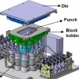
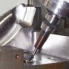
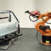
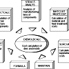
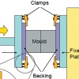
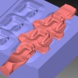
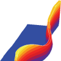

21-24 Haziran 2007 tarihlerinde Çeþme'de düzenlenen, 4th International Conference and Exhibition on Design and Production of Machines and Dies/Molds veya Türkçe adýyla 4. Uluslararasý Makina ve Kalýp/Model Tasarým ve Ýmalat Kongresi ve Sergisi'nde yapýlan sunumlara ait bazý makaleler aþaðýda verilmiþtir.
Kongre'de yapýlan tüm sunumlarýn listesi için týklayýnýz:
Kongre Programý (pdf)
New Technologies to Form Light Weight Automotive Components
H.Palaniswamy, A.Yadav, S. Kaya, T.Altan
Center for Precision Forming (formerly, Engineering Research Center for Net Shape Manufacturing)
The Ohio State University, Columbus, OH, USA
Abstract:
This paper presents an overview of advances in sheet metal forming to enhance forming of lightweight materials such as Ultra/Advanced High strength Steel (U/AHSS), aluminum alloys and magnesium alloys for autobody panels. Advances in conventional stamping and sheet hydroforming such as multipoint cushion system, flexible blank holder, and new processes such as warm stamping/sheet hydroforming for aluminum and magnesium alloys, hot stamping for boron steels are discussed. Practical examples of application of advanced forming technology for autobody panel manufacturing are presented.
Keywords:
Sheet metal forming, Sheet hydroforming, Warm sheet forming
Modern Machining Techniques for Mouldmaking
S. Docker, P.J. Dickin Delcam plc,
Small Heath Business Park, Birmingham B10 0HJ, UK
Abstract:
The increased globalisation of the mouldmaking industry has made it essential for all companies in the business to do everything they can to increase productivity. Newer machining techniques like high-speed machining and five-axis machining can give a crucial advantage in meeting these objectives. However, introducing these techniques involves much more than purchasing new machine tools. A modern CAM system is also essential, that can support the advanced strategies needed to maximise the productivity of these machines. These techniques, coupled with the ability to simulate toolpaths on the computer before they are sent to the machine, allow high-confidence machining, where top quality results can be guaranteed with minimal need for machine supervision.
Keywords: Machining, CAM, High-speed machining, five-axis machining
Optical Measuring Technologies in Sheetmetal Processing
Konstantin Galanulis
GOM Gesellschaft für Optische Messtechnik mbH Mittelweg 7 38106
Braunschweig, Germany
Abstract:
During recent years, optical measuring technologies in sheet metal forming and tooling have been used more and more in the industry. Main applications are the digitizing of metal sheet parts and tools, forming analysis of metal sheets as well as the determination of material properties. Good interfaces to conventional CAD/CAM and numerical simulation systems made such optical measuring systems a part of complex process chains. These process chains mainly focus on optimizing the development of products and production processes and on improving the product quality. Using optical systems considerably decreases the development time for products and production while improving the quality.
Keywords: Measuring instrument, Sheet metal, 3D digitizing, Material properties
Cost Calculation of Dies and Molds:
Challenges, Developments and Future Trends
Savas Tumis,
Institute of Machine Tools and Production Logistics,
Tongji University Shanghai, Sino-German Graduate College, 200092, Shanghai, China
Abstract:
The degree of accuracy in generation quotations has a direct impact on the die and mold manufacturer's
profitability. Die and mold manufacturers use their experience and expertise and often guess the price with
varying success. Numerous tests have shown that the quotations for a die or mold can vary by more than
100% under the same circumstances. Due to modern information technologies cost calculation of dies and
molds can be supported in each phase. In this paper, challenges, problems and the state-of-the-art
technology of cost calculation of dies and molds will be discussed. Developments and future trends of cost
calculation systems will be presented on the experience and knowledge base of the author in development
of die and mold cost calculation systems.
Keywords: Costs of die and mold, decision making regarding cost, manufacturing of dies and molds
Set-Up Reduction in Injection Molding Process - A Case Study in Packaging Industry
B.Kayis, S. Kara
The School of Mechanical and Manufacturing Engineering
The University of New South Wales,
Sydney, 2052, Australia
Abstract:
The competitiveness of manufacturers can be significantly enhanced through implementation of Setup Reduction (SUR) initiatives. This paper presents a simplified SUR approach which was trialed and fully
implemented in an injection molding facility. The identification of bottlenecks in production was carried out
by using extensive data gathering on machine down-time and/or changeover time records. The detailed
analysis of the operations carried out by employees were investigated by using the Single Minute
Exchange of Dies (SMED) philosophy. Close collaboration with employees and formation of SUR teams
facilitated the development of a system for the organization and storage of molds. The system developed
ensures mold readiness conditions, reduces lead times and improves the storage, monitoring and
accessibility of machine programs.
Keywords: Manufacturing System, Performance Evaluation, Cost
Forging Simulation at Izeltas
E. Arbak, S. Ünal, L. Boylu, Ý. Erzincanlý,
Izeltas A.S., Isikkent, 35070, Izmir, Turkiye
A. E. Tekkaya
2Institut für Umformtechnik und Leichtbau, Universität Dortmund, Germany and Manufacturing Engineering Department,
ATILIM University, Ankara, Turkiye
Abstract:
As a remarkable alternative to the trial-and-error procedure carried out on the shop floor following the tool manufacture, simulation on an interactive computer environment enables the tool designer to foresee potential defects on the part such as laps and under-fill and stresses on the tool. This paper summarizes the theoretical and initial verification work carried out at Izeltas with the specific goal of examining materials behavior under elevated temperature and high-stress conditions, studying the effect of temperature and strain rate on the flow characteristics, the effect of lubrication on tool friction and the effects of hammer working parameters on the material flow characteristics. Results of the mentioned work will enable the engineers to understand the mechanics of the process and to improve the tool design reducing the costly price of trial forging operations, short tool life and scrap material.
Keywords: Forging, Simulation, Methodology
Finite Element Simulation of Flexible Roll Forming:
A Case Study on Variable Width U Channel
E. Gülçeken (1), A. Abeé (2), A. Sedlmaier (2) and H. Livatyali (1)
(1) ITU Faculty of Mech. Engr., Gümüssuyu, TR-34437 Turkey
(2) data-M Gmbh, Munich, Germany
Abstract:
The process and roll design for flexible roll forming of a U channel with varying cross-section was investigated. In order to obtain a constant leg height and variable cross-section width, rotational speeds, locations, orientations and dimensions of the rolls were calculated following the unfolding prediction of the sheet metal. The proposed methodology for variable cross-section open channels was tested by a case study conducted for a typical structural U channel of St 37 sheet steel with arbitrary dimensions. The appropriate pre-cut shape (unfolded blank) was calculated. The feasibility of the process and roll design was verified on a commercial roll forming design program COPRA® RF coupled with a finite element module furnished by MSC Marc®. Initial simulations yield not perfect, but promising results that the proposed process and roll design method is sufficiently powerful to program a computer numerically controlled flexible roll forming machine for a given open channel. Thus, the minor leg flare at the front and back ends and leg height variation along the channel can be eliminated by a few tryouts on the actual machine.
Keywords: Metal forming, Roll forming, Finite element method
Ýlgili Haber > 10-08-2007 > 21-24 Haziran tarihlerinde Çeþme-Ýzmir'de yapýlan 4. Uluslararasý Makina ve Kalýp/Model Tasarým ve Ýmalat Kongresi
ve Sergisi baþarýyla sonuçlanmýþtýr:
Not: TurkCADCAM.net, bu etkinliðin tanýtým sponsorlarýndandýr.
|